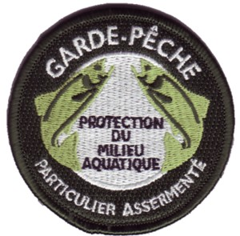

aprés le bac je vais essayer d'avoir un niveau CAP pour devenir garde de pêche

Si le niveau CAP est suffisant pour l'agent technique, le bac est conseillé pour espérer devenir technicien. Pour le reste, on devient généralement garde-pêche sur concours. Il peut s'agir du concours national d'agent technique de l'environnement (catégorie C) ou de celui de technicien de l'environnement (catégorie B) de la fonction publique.
le garde de pêche, exercent des missions de surveillance et de police qui leur sont prescrites par la loi : police de l’eau, de la pêche. Leur mission comprend quatre volets :
devenir garde de peche particulier
Pour sa j'irai voir la fédération de la pêche pour avoir plus d'information.